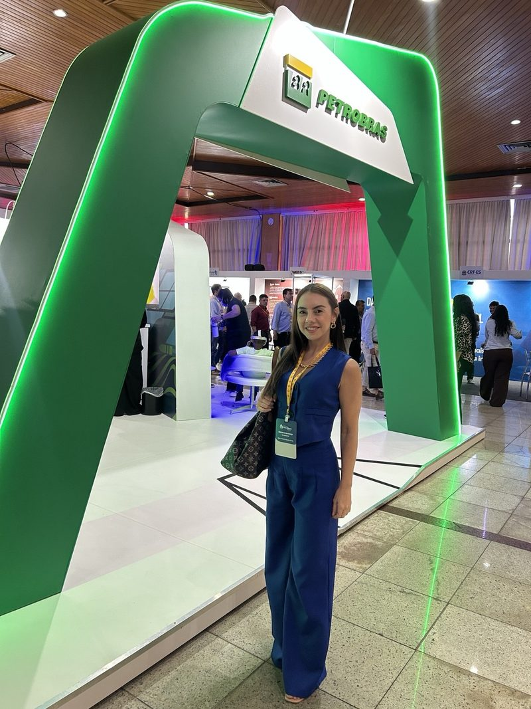

Para quem é este curso?
01
Quer um trabalho melhor
Não está satisfeita com o salário atual, mas o inglês ainda não acompanha as exigências do próximo cargo.
02
Busca ganhar em dólar ou euro
Quer trabalhar para empresas do exterior e competir por oportunidades internacionais.
03
Sonha com trabalho remoto
Procura mais liberdade financeira e geográfica sem abrir mão de uma carreira sólida.
04
Quer usar o inglês na vida
Vê utilidade em viagens, mas não descarta transformar o idioma em uma ferramenta profissional.
